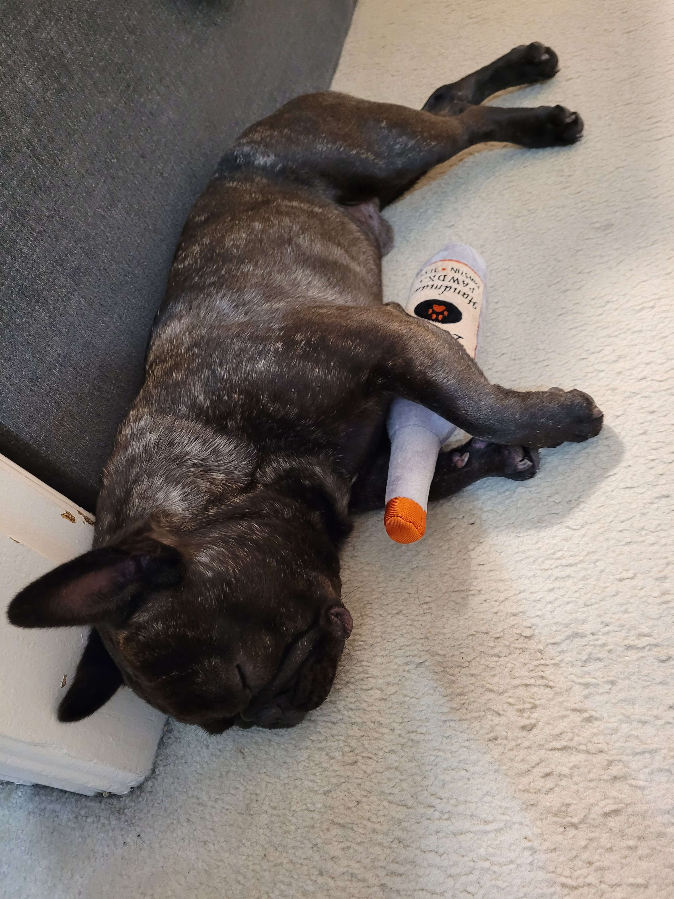
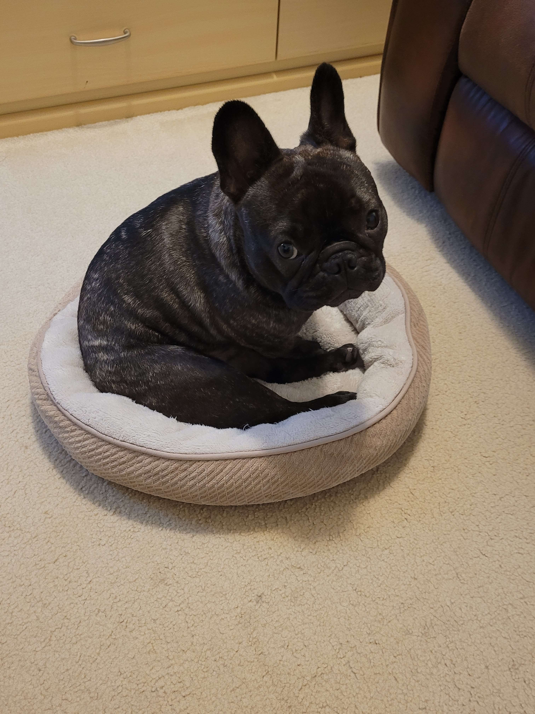

Lab 11 - Libraries & jQuery
Challenge
This lab introduced us to jQuery in JavaScript.
We were challenged to implement event listeners like the previous lab except this time with jQuery.

Problems
One problem was impleenting the buttons so that it would only effect their own divs,
We had two approaches to this in that we either made buttons with their own IDs or by referencing the buttons based on the div's ID.

Reflection
I think this lab was pretty fun! I had fun in putting the special div content and I think the lab went prett smoothly.
jQuery definitely made this a lot more simple by condensing a lot of jargon in original JavaScript.
Results
